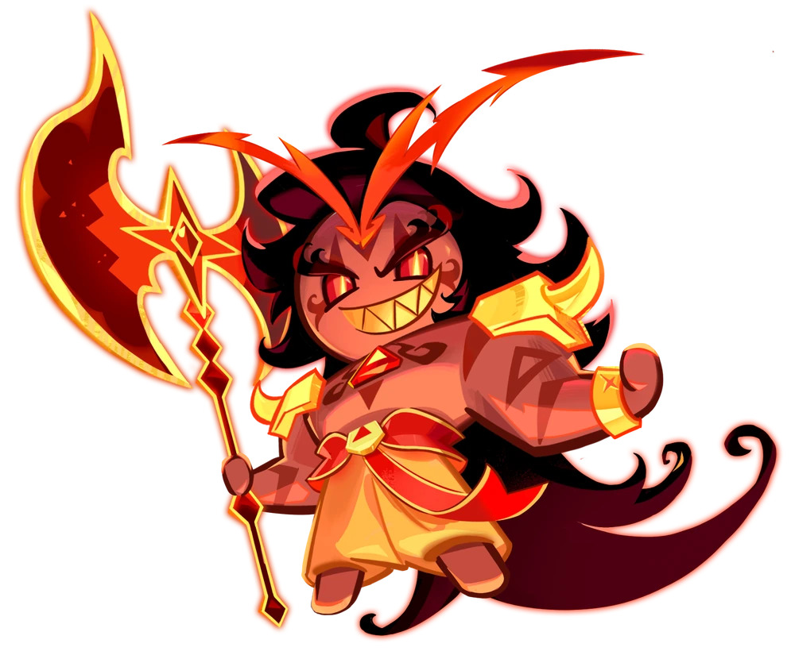
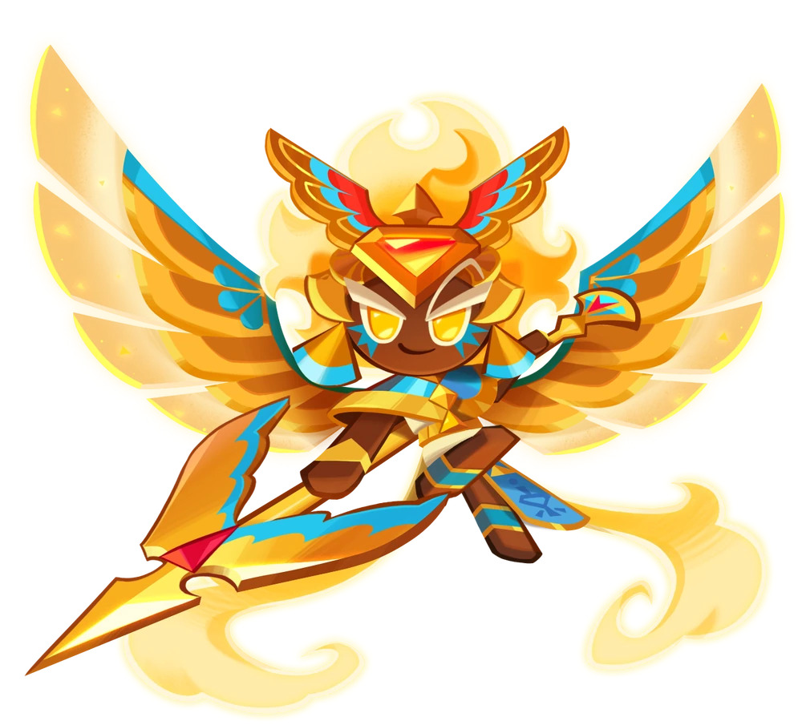
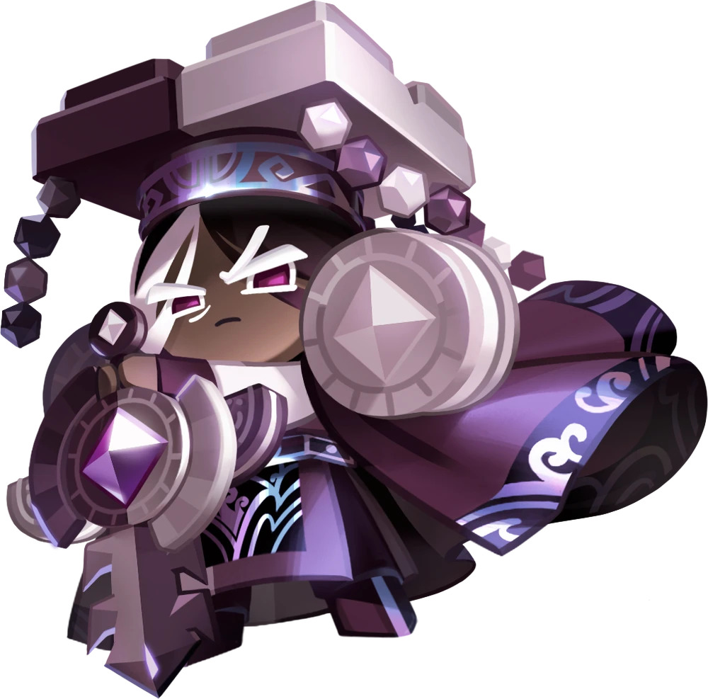
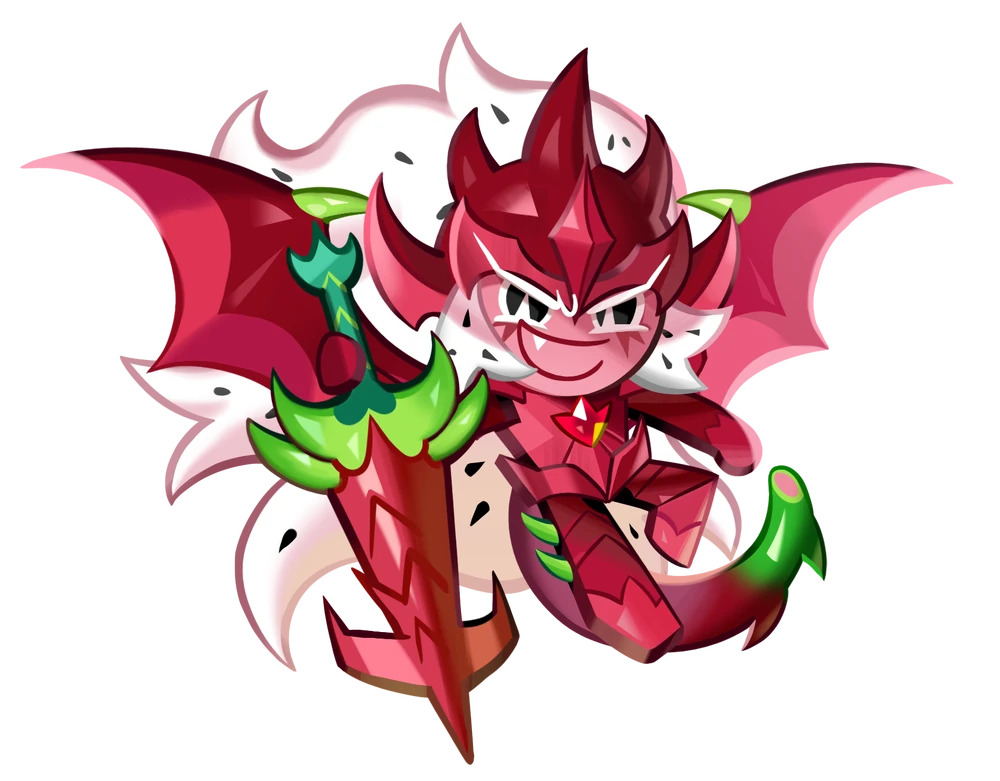
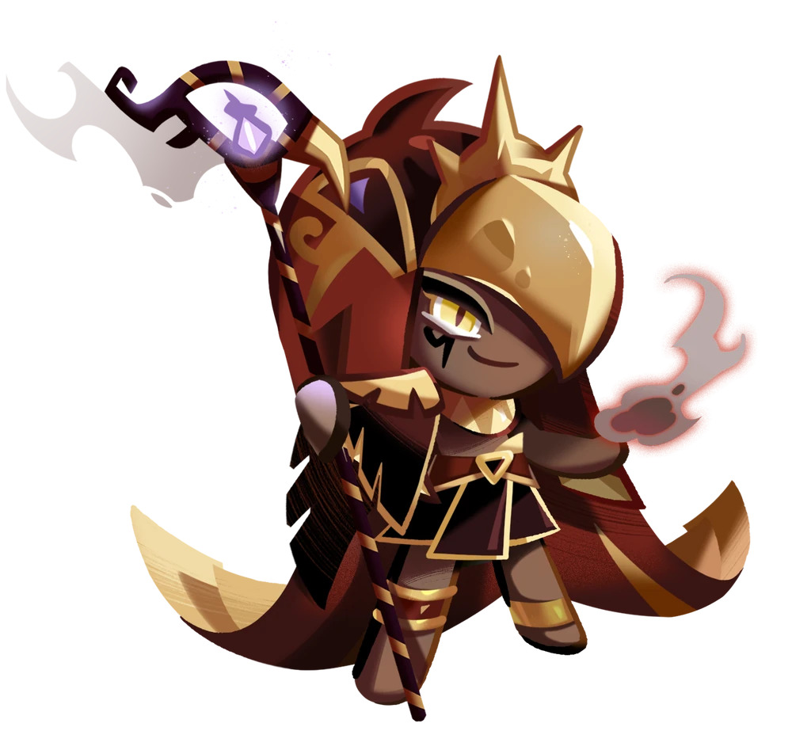

|  |
Burning Spice Cookie |
Axe |
Burning Spice Cookies, is one of the five beast cookies in the continent Beast Yeast. He was once called the Herald of Change, but after he got bored of taking care of things, he decided that destruction was the only thing that excited him, which now gave him the title "The Great Destroyer." |
|  |
Golden Cheese Cookie |
Spear |
Golden Cheese cookie is one of the five ancient cookies. She actually shares a soul jam with Burning Spice cookie, which in turn made them fight eachother. When Golden Cheese was about to be killed by Burning Spice, her soul jam was awakened, which made her much more powerful, which made her defeat Burning Spice Cookie. |
|  |
Dark Cacao Cookie |
Sword |
Dark Cacao cookie is one of the five ancient cookies. Like Golden Cheese cookie, he also shares a soul jam with a beast cookie, this time with Mystic Flour cookie. While Mystic Flour cookie and Dark Cacao Cookie were fighting Dark Cacao's sword broke, which freed the two dragons he sealed in his sword. While Mystic Flour was about to kill Dark Cacao, he managed to find his "resolution", which awakened his soul jam and turned him into the "Dragon Lord". Which defeated Mystic Flour Cookie. |
|  |
Pitaya Dragon Cookie |
Dragon Sword |
Pitaya Dragon Cookie is one of the five dragon. He is a primordial being, meaning he existed before cookie civilization began. He likes to fight a lot, which made him constantly fight Hollyberry Cookie, because he found her "fun to fight". |
|  |
Smoked Cheese Cookie |
Magic Staff |
Smoked Cheese cookie, is one of Golden Cheese cookie's servant. He is the most powerful of the servants, which made him the general of the Golden Cheese Kingdom. Although he questions Golden Cheese cookie most of the time, he cares about his kingdom the most. |